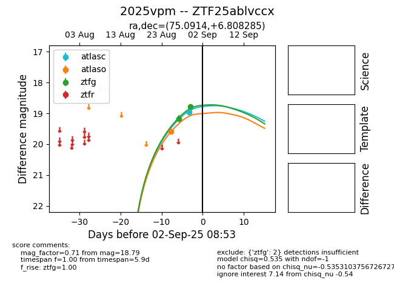

FINK: ZTF25ablvccx
Lasair: ZTF25ablvccx
ALeRCE: ZTF25ablvccx
TNS: 2025vpm
YSE: 2025vpm
ZTF25ablvccx (ztf,fink)
2025vpm (tns,yse)
ATLAS25kvd (atlas)
equatorial (ra, dec) = (75.0914,+6.80828)
galactic (l, b) = (193.1243,-20.95661)

last atlasc=18.71, atlaso=19.25, ztfg=19.85, ztfr=19.22
2 atlasc, 3 atlaso, 10 ztfg, 6 ztfr detections